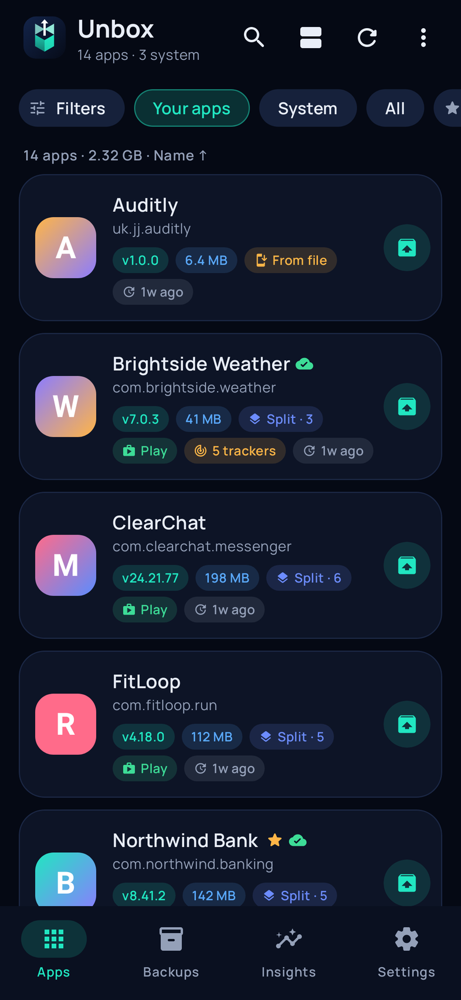
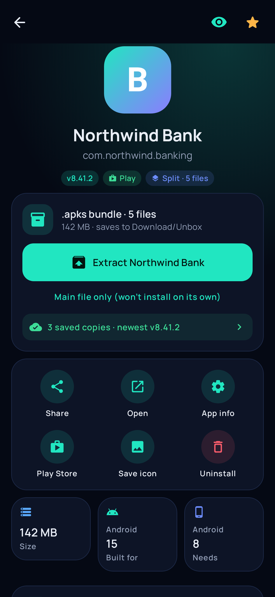
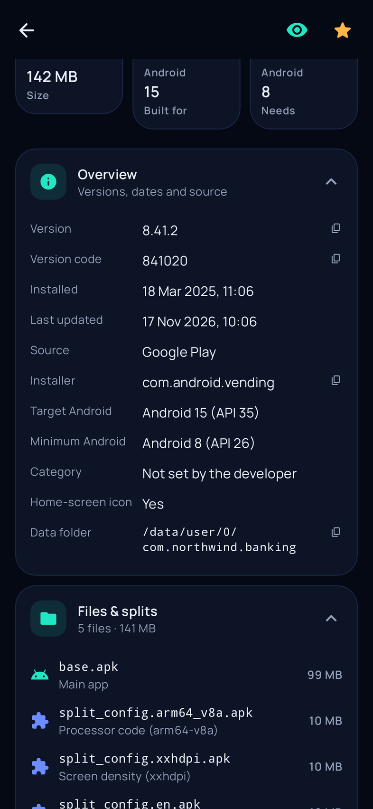
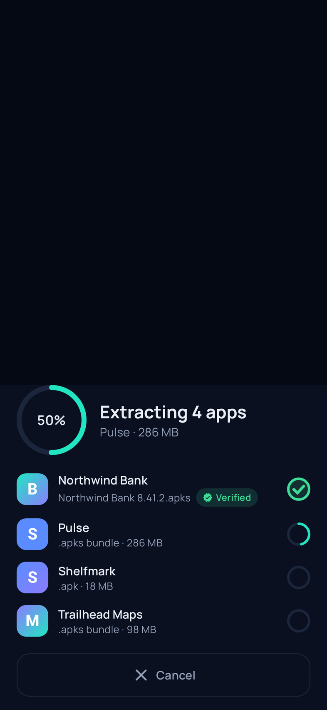
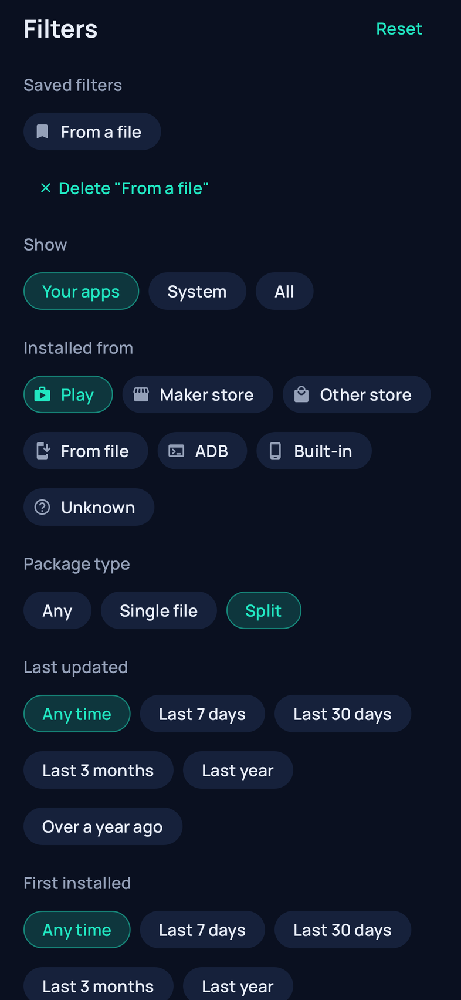
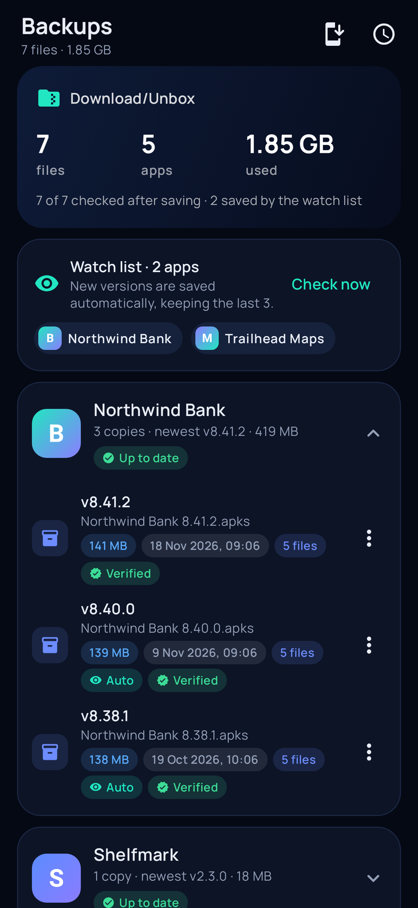
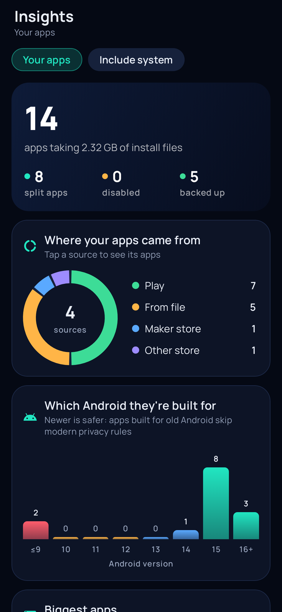
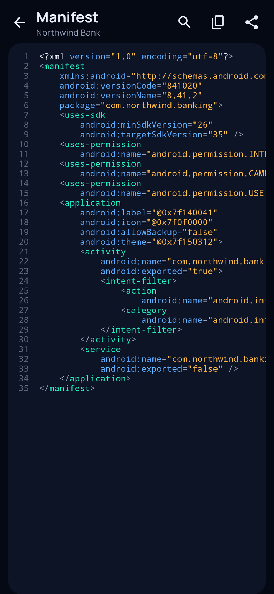
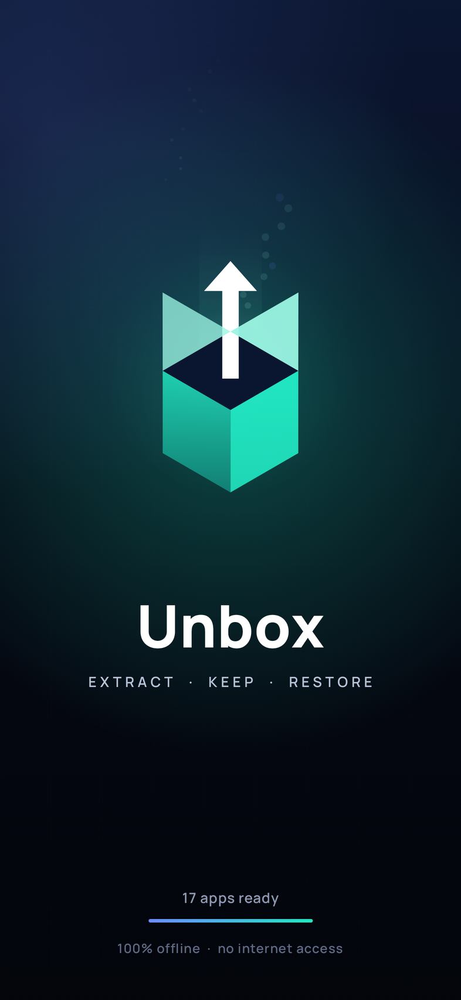
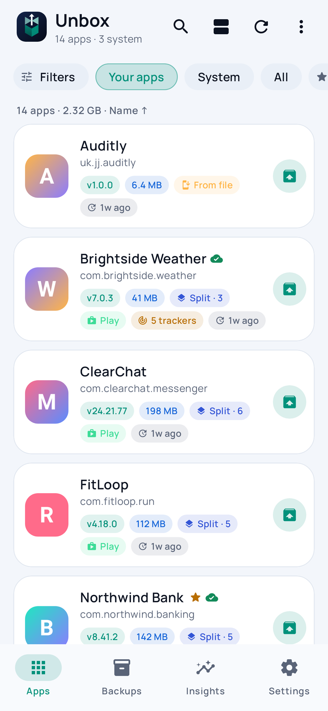

Keep a copy of every app on your phone.
Unbox saves the apps installed on your phone as files you can keep, move to a computer, share or reinstall later. Most apps from Google Play are installed as several pieces; Unbox saves them complete, as one .apks bundle that actually reinstalls, and checks every file after saving.
Find any app in seconds with filters, saved filter sets and search. Extract one app or fifty at once, keep every version on a watch list, and reinstall from your backups with Unbox's own installer. Unbox has no internet access, so nothing about your apps can ever leave your phone.
Unbox copies apps that are installed on your own phone. Share only what you have the right to share. What the law says
- Version 1.0.0
- Android 10 or later
- 4.6 MB
Free, with nothing to unlock. No adverts, no account with the developer, no tracking. Compare or read the release notes.
Chrome may say the file might be harmful. It shows this for app files that do not come from Google Play. Choose Download anyway.

- No internet accessUnbox cannot go online at all.
- No advertsNone in the app and none on this site.
- Nothing to buyEvery feature is free, with no trial and no subscription.
- No accountNothing to sign up for.
A look inside
These are the real screens, drawn from the app's own code with made-up apps. Swipe or scroll sideways to see them all.









How it works
Android keeps every installed app as one or more package files. Unbox copies those files, packs split apps into one bundle and checks the copy, all on your phone.
Pick
Search or filter your apps, tap one, or long-press to pick several. Swipe an app to extract it in one move.
Extract
Unbox saves each app to Download/Unbox: a single .apk, or a complete .apks bundle for split apps, checked with SHA-256 after saving.
Keep or reinstall
Share the file, keep every version on the watch list, or reinstall it later with Unbox's own installer.
Everything is in, and all of it is free
Nothing below is held back for a paid tier, because there is no paid tier.
Extracting
- Split apps saved complete
- Most Play apps come in pieces. Unbox saves every piece in one .apks bundle that reinstalls properly, or just the main file if you prefer.
- Batch extract
- Pick as many apps as you like, or every app in a filter, and watch each one finish with its own progress ring.
- Every file checked
- A SHA-256 fingerprint is taken while saving and checked again afterwards, so a damaged copy is never kept.
- Your file names
- Templates with the name, version, version code, package and date, with a live preview.
Finding apps
- Filters for almost anything
- Install source, split or single, last updated, first installed, target Android, size, disabled, hidden apps, debuggable and trackers.
- Saved filter sets
- Save any combination as a one-tap chip above your apps.
- Search everything
- By name, package name or permission.
- Three layouts
- Cards, a compact list or a grid of icons, sorted seven ways.
Keeping and restoring
- Backups in one place
- Every copy you save, grouped by app with every version, with share, check, install and delete.
- Watch list
- Add an app and every new version is saved for you, keeping the last few.
- Built-in installer
- Reinstalls .apk, .apks and .xapk files. Android always asks you to confirm.
- Widget and pull-down tile
- Extract the app you installed or updated last, in one tap from the home screen.
Knowing your apps
- Full app details
- Versions, dates, installer, split files and what each is for, processor support, permissions, signing certificate and components.
- Manifest viewer
- Any app's AndroidManifest.xml, coloured, searchable and copyable.
- Trackers inside apps
- 69 known advertising, analytics and crash-reporting libraries found in each app's code, offline.
- Insights and exports
- Charts of sources, Android versions and sizes, and the whole list as a spreadsheet or PDF.
Private by design
No internet at all
Unbox does not hold Android's internet permission. It cannot send anything anywhere.
Nothing about you
No adverts, no account, no analytics and no crash reports. Your app list and backups stay on your phone.
Asks only when needed
Installing, Usage access and app lock are each explained first, and every one is optional.
Use it within the law
Unbox is for keeping your own backups of the apps on your phone, and for sharing apps their makers allow you to share, such as free apps, open-source apps or apps you made yourself.
- Copyright, Designs and Patents Act 1988. Apps are protected by copyright. Copying an app, or giving a copy to someone else, without the copyright owner's permission can infringe copyright (section 16), and distributing copies of paid apps without permission can also be a criminal offence (section 107). Keep backups for yourself and only share apps you have the right to share.
Laws differ in other countries. If you are not in the UK, the rules where you are apply. Read the terms of use.
Installing and updating
Unbox is not on Google Play, so your phone asks a couple of extra questions the first time.
Download the app file
Tap Download on your phone. The file is called Unbox.apk and is about 4.6 MB. If Chrome says the file might be harmful, choose Download anyway. First tick the box to say you will use the app within the law.
Allow the install
Open the file. The first time, Android asks you to allow your browser to install apps. Allow it, go back and tap Install. If Google Play Protect steps in, choose More details, then Install anyway.
Updating later
Unbox never goes online, so it cannot check for updates itself. Settings, About, Check for updates opens the release notes in your browser. Install the new file over the old one and your settings and backup list are kept.
Version 1.0.0, released 26 November 2026. See the release notes, or check your download.
Questions
Is Unbox really free?
Yes. There is no paid version, no trial, no subscription and no adverts, and nothing in the app is locked.
Is it on Google Play?
No. Unbox is a personal project and is downloaded from this site as an Android app file. It needs Android 10 or later.
What is a split app, and why does it matter?
Many apps from Google Play are installed as a main file plus extra pieces for your screen, language and processor. The main file alone usually won't install on another phone. Unbox saves all the pieces in one .apks bundle, so the backup really works.
How do I install an .apks file?
With Unbox itself: Backups, then Install, or Install from a file. It also opens in other bundle installers such as SAI. Android asks you to allow Unbox to install apps the first time, and asks you to confirm every install.
Where are the files saved?
In Download/Unbox, with no storage permission needed. You can choose another folder in Settings.
Can it save an app's data or my game progress?
No. Unbox saves the app itself, not your data inside it. Android does not let one app read another app's private data.
Can I extract paid apps?
Unbox can copy any app on your phone for your own backup. Giving copies of paid apps to other people breaks copyright law, so only share apps you have the right to share.
Why does it need to see all my apps?
To list them and save them. Android lets Unbox see your installed apps; that list never leaves your phone, because Unbox has no internet access.
Will a backup reinstall over a newer version?
No. Android does not let an older version replace a newer one, and the backup must be signed by the same developer as the installed app. Uninstall the newer one first if you really need the older version.
Does it work on an iPhone?
No. Unbox is for Android phones and tablets only.
Who made it?
Unbox is made by Jonathan Jackson, an independent developer in the United Kingdom.
Keep the apps you rely on
Free, with no adverts and nothing to unlock. Made by the developer of several other free Android apps: see them all.